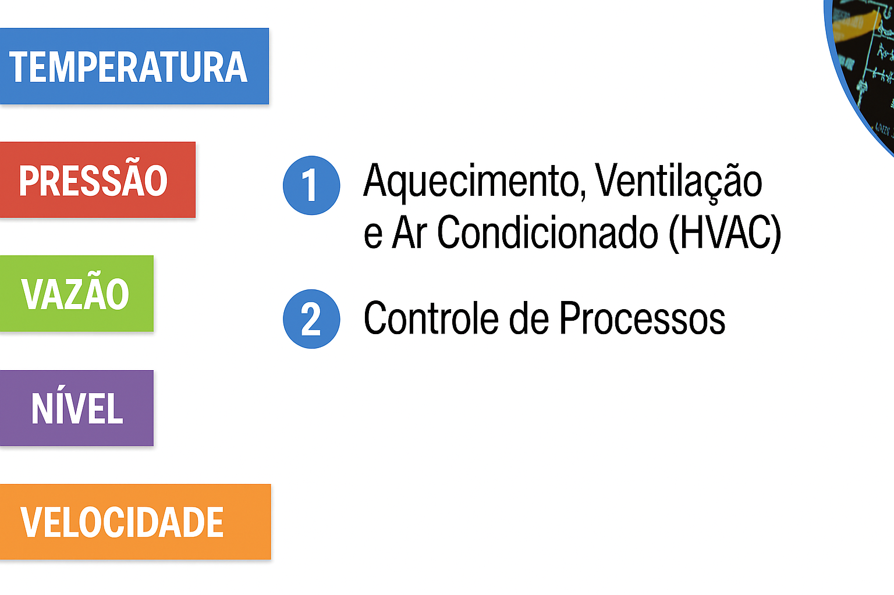
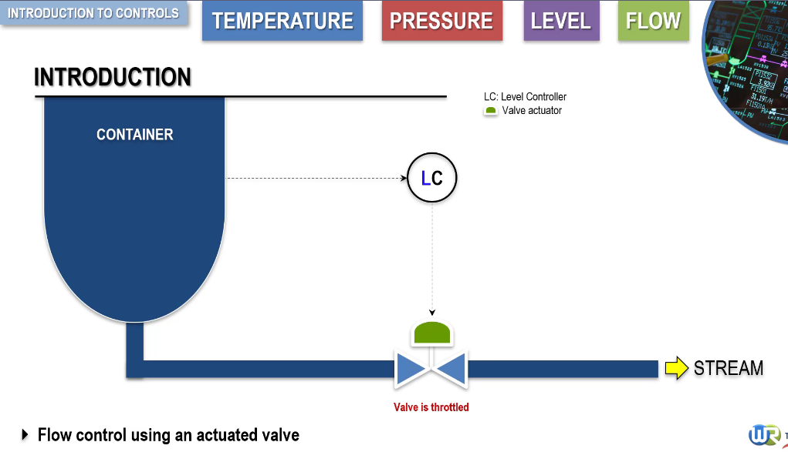
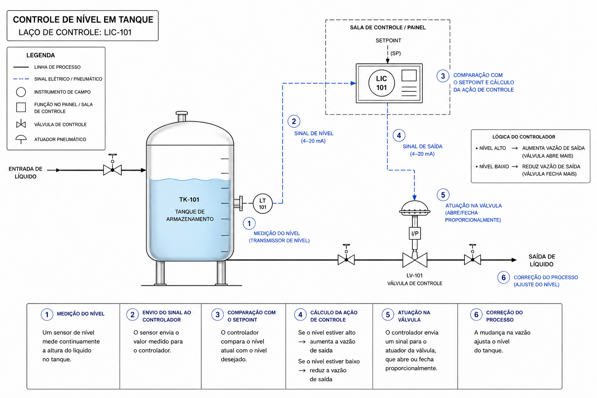

Introdução
O controle automático é uma área fundamental da engenharia dedicada à manutenção de variáveis de processo dentro de limites desejados. Essas variáveis podem incluir temperatura, pressão, vazão, nível e velocidade. Em ambientes industriais, o controle adequado dessas grandezas garante a segurança operacional, melhora a eficiência energética, preserva a qualidade do produto e aumenta a confiabilidade do sistema.

Áreas de aplicação do controle automático
O controle automático abrange duas grandes áreas principais. A primeira é formada pelos sistemas HVAC, sigla para aquecimento, ventilação e ar-condicionado, muito utilizados em edifícios comerciais e residenciais para manter conforto ambiental. A segunda é o controle de processos industriais, que envolve sistemas produtivos simples ou complexos, desde equipamentos domésticos, como um fogão, até plantas petroquímicas, unidades de produção contínua e instalações industriais de grande porte.
Enquanto o controle HVAC busca manter condições confortáveis para ocupação humana, o controle de processos industriais tem como objetivo manter condições operacionais adequadas para produção segura, contínua e eficiente. Essa diferença de finalidade influencia os sensores utilizados, os atuadores escolhidos, a estratégia de controle e o nível de robustez exigido do sistema.
Variáveis de processo
As principais variáveis controladas em sistemas industriais incluem temperatura, pressão, vazão, nível e velocidade. A temperatura é relevante em reações químicas, fornos, trocadores de calor, sistemas térmicos e processos que dependem de aquecimento ou resfriamento. A pressão é fundamental em sistemas de fluidos, vasos pressurizados, tubulações e reatores. A vazão, também chamada de fluxo, representa a quantidade de fluido que passa por um ponto em determinado intervalo de tempo. O nível corresponde à altura de líquido em tanques, vasos ou reservatórios. A velocidade aparece principalmente em sistemas rotativos, transportadores, motores e máquinas de produção.
Essas variáveis são constantemente monitoradas e ajustadas para manter o sistema dentro das condições desejadas. Quando uma variável se afasta do valor esperado, o sistema de controle deve detectar o desvio, calcular a correção e atuar no processo para reduzir o erro.
Arquitetura básica de um sistema de controle
Um sistema de controle típico envolve três elementos principais: sensor ou transmissor, controlador e elemento final de controle. O sensor mede a variável de processo e converte essa condição física em um sinal utilizável. O controlador compara o valor medido com o valor desejado, chamado setpoint, e calcula a ação de controle necessária. O elemento final de controle executa a correção no processo, podendo ser uma válvula, bomba, motor, aquecedor, inversor de frequência ou outro dispositivo de atuação.

Controle por válvulas atuadas
Na maioria dos processos industriais, o controle é realizado por meio da variação do fluxo de fluidos. Isso é frequentemente feito com válvulas de controle equipadas com atuadores. O atuador recebe o sinal enviado pelo controlador e ajusta a posição da válvula. A válvula, por sua vez, regula a vazão do fluido no sistema. Essa atuação pode aumentar ou reduzir a passagem de líquido, vapor, gás ou outro fluido de processo.
Em um tanque, por exemplo, o nível pode ser controlado ajustando a vazão de saída. Se o nível sobe acima do valor desejado, a válvula abre para aumentar a saída de fluido, reduzindo o nível. Se o nível cai abaixo do desejado, a válvula fecha parcialmente para reduzir a vazão de saída e permitir a recuperação do nível. Esse comportamento ilustra a ação corretiva típica de uma malha de controle.
Tempo de resposta e dinâmica de controle
Além de controlar a variável, é essencial que a resposta do sistema ocorra em um tempo adequado. Esse conceito pertence à dinâmica de controle e envolve tempo de resposta, estabilidade e prevenção de oscilações excessivas. Um sistema muito lento pode permitir grandes desvios antes de corrigir a variável. Um sistema rápido demais, mal ajustado ou muito agressivo pode gerar oscilações, instabilidade e desgaste mecânico nos atuadores.
A combinação entre o atuador da válvula e o comportamento dinâmico do processo determina a qualidade do controle. Por isso, o engenheiro de controle precisa entender não apenas o instrumento isolado, mas também o processo físico em que ele está inserido.
Outras formas de controle de fluxo
Embora válvulas sejam amplamente utilizadas, existem outras formas de controlar o fluxo. Bombas de velocidade variável ajustam a vazão por meio da variação da rotação da bomba. Bombas de deslocamento positivo com curso ajustável alteram o volume bombeado de acordo com o curso do mecanismo. Essas alternativas são especialmente úteis quando se busca maior precisão, melhor eficiência energética ou menor perda por estrangulamento em válvulas.
Competências do engenheiro de controle
O engenheiro de controle de processos precisa reunir conhecimentos multidisciplinares. A engenharia química contribui para a compreensão de processos, reações e propriedades dos fluidos. A engenharia mecânica auxilia na análise de equipamentos, tubulações, bombas, válvulas e sistemas físicos. A engenharia elétrica e eletrônica fornece a base para instrumentação, sinais, automação e acionamentos. Sistemas pneumáticos continuam importantes em muitas válvulas industriais. Computação e comunicação digital também são essenciais em sistemas modernos de controle, supervisão e integração industrial.
Essa combinação de conhecimentos permite analisar, projetar, ajustar e otimizar sistemas complexos. O controle de processos não depende apenas de algoritmos, mas da integração entre processo, instrumentação, atuadores, lógica de controle e operação industrial.
Exemplo prático: controle de nível em tanque
Considere um tanque industrial que armazena um líquido recebido continuamente. O objetivo é manter o nível constante mesmo que a entrada de fluido varie ao longo do tempo. Para isso, um sensor de nível mede continuamente a altura do líquido no tanque e envia o valor medido para o controlador. O controlador compara o nível atual com o nível desejado e calcula a ação de controle.

Se o nível estiver alto, o controlador aumenta a vazão de saída. Se o nível estiver baixo, o controlador reduz a vazão de saída. Para executar essa correção, o controlador envia um sinal ao atuador da válvula, que abre ou fecha proporcionalmente. A mudança na vazão ajusta o nível do tanque, e a realimentação mantém o sistema monitorando continuamente o resultado da ação aplicada.
O resultado esperado é um nível estável, mesmo com variações na entrada de fluido. Esse exemplo mostra a lógica básica de uma malha fechada: medir a variável, comparar com o setpoint, calcular a correção, atuar no elemento final e medir novamente para confirmar o efeito no processo.
Conclusão
O controle automático de processos industriais é a base para manter variáveis como temperatura, pressão, vazão, nível e velocidade dentro de faixas desejadas. Um sistema eficiente depende da escolha adequada dos sensores, do controlador, dos atuadores e da compreensão da dinâmica do processo. Em aplicações industriais, esse conhecimento é decisivo para segurança, qualidade, estabilidade operacional e eficiência energética.